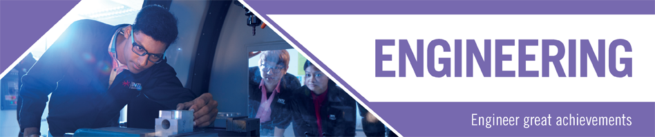

Home
Engineering
 The impact of Engineering on the advancement of civilisation is innumerable. From the processors that run our smartphones, to the power plants that keep our cities lit, to the skyscrapers that seem to touch the sky and planes that travel across continents daily, the mastery and application of engineering affects and improves every aspect of how we work, live, connect and travel.As new technologies come into play so do new possibilities that arise for the next generation of engineers. By mastering the study and application of the art and science of Engineering, you can improve every aspect of life itself while enjoying a successful career anywhere in the world. Secure the blueprint for your future and build your career with INTI.
Computing & IT
Computing and IT have become an intrinsic part of everything we do. If you consider the way we communicate, socialise, do business or simply go about our daily lives, it’s easy to appreciate the benefits – and importance – of technology.As innovations continue to increase and evolve, more and more IT professionals are needed. Career opportunities in the tech world are without limits. You can contribute in many areas, while making your own work meaningful and rewarding, wherever you choose to be.
If you have an interest for solving multi-dimensional problems requiring imagination and solid technical knowledge, we can help you build your future in this well-paying field.